Direct sum¶
Description¶
Let  , 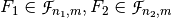 be Vector Boolean functions. Consider the Vector Boolean function 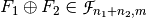, called direct sum, defined as 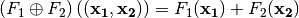.
, 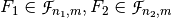 be Vector Boolean functions. Consider the Vector Boolean function 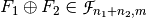, called direct sum, defined as 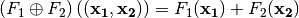.

Library¶
The method included in VBF to perform this construction is the following:
void directsum(VBF& X, VBF& F, VBF& G)
Example¶
The following program provides the weight, algebraic degree, balancedness, correlation immunity, nonlinearity and algebraic immunity of two Vector Boolean functions given its polynomial representation in ANF and calculates the same criteria for the its direct sum.
#include <iostream>
#include <fstream>
#include "VBF.h"
int main(int argc, char *argv[])
{
using namespace VBFNS;
VBF F, G, X;
ifstream input1(argv[1]);
if(!input1){
cerr << "Error opening " << argv[1] << endl;
return 0;
}
F.putHexTT(input1);
input1.close();
ifstream input2(argv[2]);
if(!input2) {
cerr << "Error opening " << argv[2] << endl;
return 0;
}
G.putHexTT(input2);
input2.close();
cout << "weight(F)=" << weight(F) << endl;
cout << "deg(F)=" << deg(F) << endl;
if (Bal(F)) {
cout << "F is a balanced function" << endl;
} else {
cout << "F is a non-balanced function" << endl;
}
cout << "Degree of Correlation immunity of F=" << CI(F) << endl;
cout << "R(F)=" << SpectralRadius(F) << endl;
cout << "nl(F)=" << nl(F) << endl;
cout << "ACmax(F)=" << maxAC(F) << endl;
cout << "ld(F)=" << ld(F) << endl;
cout << "AI(F)=" << AI(F) << endl;
cout << "F is PC of degree " << PC(F) << endl;
cout << endl;
cout << "weight(G)=" << weight(G) << endl;
cout << "deg(G)=" << deg(G) << endl;
if (Bal(G)) {
cout << "G is a balanced function" << endl;
} else {
cout << "G is a non-balanced function" << endl;
}
cout << "Degree of Correlation immunity of G=" << CI(G) << endl;
cout << "R(G)=" << SpectralRadius(G) << endl;
cout << "nl(G)=" << nl(G) << endl;
cout << "ACmax(G)=" << maxAC(G) << endl;
cout << "ld(G)=" << ld(G) << endl;
cout << "AI(G)=" << AI(G) << endl;
cout << "G is PC of degree " << PC(G) << endl;
cout << endl;
directsum(X,F,G);
cout << "weight(F directsum G)=" << weight(X) << endl;
cout << "deg(F directsum G)=" << deg(X) << endl;
if (Bal(X)) {
cout << "F directsum G is a balanced function" << endl;
} else {
cout << "F directsum G is a non-balanced function" << endl;
}
cout << "Degree of Correlation immunity of F directsum G=" << CI(X) << endl;
cout << "R(F directsum G)=" << SpectralRadius(X) << endl;
cout << "nl(F directsum G)=" << nl(X) << endl;
cout << "ACmax(F directsum G)=" << maxAC(X) << endl;
cout << "ld(F directsum G)=" << ld(G) << endl;
cout << "AI(F directsum G)=" << AI(X) << endl;
cout << "F directsum G is PC of degree " << PC(X) << endl;
return 0;
}
If we use the Boolean functions with the following Truth Tables (in hexadecimal representation) as inputs:
6cb405778ea9bd30
5c721bcaac27b1c5
The output would be the following:
weight(F)=32
deg(F)=3
F is a balanced function
Degree of Correlation immunity of F=1
R(F)=16
nl(F)=24
ACmax(F)=32
ld(F)=8
AI(F)=3
F is PC of degree 2
weight(G)=32
deg(G)=3
G is a balanced function
Degree of Correlation immunity of G=2
R(G)=32
nl(G)=16
ACmax(G)=64
ld(G)=0
AI(G)=2
G is PC of degree 1
weight(F directsum G)=2048
deg(F directsum G)=3
F directsum G is a balanced function
Degree of Correlation immunity of F directsum G=4
R(F directsum G)=512
nl(F directsum G)=1792
ACmax(F directsum G)=4096
ld(F directsum G)=0
AI(F directsum G)=3
F directsum G is PC of degree 1
These results are congruent with the properties derived in [SarkarMaitra:00] and others derived by Jose Antonio Alvarez:
- 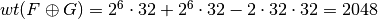.
- 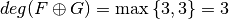.
- F is 1-resilient, G is 2-resilient, and is 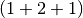-resilient.
- 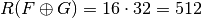 because F and G are Boolean functions.
- 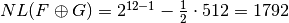.
- 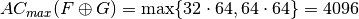.
- 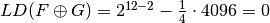.
- 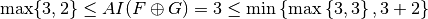.